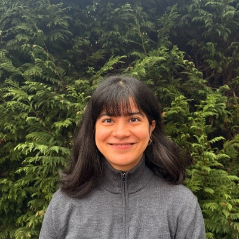

About

I am a doctoral researcher in art and design at Nottingham Trent University, working across fashion design and theory, craft economies, sustainability, and community-based knowledge. My PhD, ‘Corresponding in a Pluriversal Contact Zone: Indigenous Wool and Design-Craft Engagements in Kullu Valley, India’, is an ethnographic study of indigenous wool (desi oon) practices in the western Himalayas. It asks how designers might enter and attune to a place before working within it.
My earlier work grew out of my MA thesis, ‘Cultural and Creative Identity of Artisans: Impact of Design Education’, which explored how community-based craft in Kutch, Gujarat, is recontextualised when artisans encounter formal design education. Since then I have worked as a researcher and educator across projects in India and the UK — most recently as research lead on Next Door Repair, a community mending project in Hackney, London, with Twist and Turn Agency. I teach in the Department of Fashion at NTU and as a guest lecturer on fashion and colonialism, sustainable fashion systems, and nature–fashion partnerships.
EDUCATION
PhD Art and Design, Nottingham Trent University | October 2023 – Present
MA Fashion Futures, London College of Fashion, UAL | January 2020
BA Fashion Design, National Institute of Fashion Technology, Kolkata | May 2018
RESEARCH EXPERIENCE
Research Lead, Twist and Turn Agency, London | April 2024 – March 2026
Community Couture (co-lead, UK–India digital collaboration) | November 2021 – June 2022
TEACHING EXPERIENCE
Hourly Paid Lecturer, Department of Fashion, Nottingham Trent University | September 2026 – Present
Guest Lecturer (fashion and colonialism, sustainable fashion systems, nature and fashion) | July 2020 – Present
Lecturer in Fashion Business Management, Indian Institute of Art and Design, New Delhi | July 2020 – January 2022
INDUSTRY EXPERIENCE
Researcher, 200 Million Artisans, Remote | December 2022 – September 2023
Sustainability Development Associate, Staiy, Berlin | August 2020 – November 2020
Knowledge Exchange and Education Administrator, Centre for Sustainable Fashion, London | January 2020 – March 2020
Impact Evaluation Assistant, Centre for Sustainable Fashion, London | December 2019 – February 2020
GRANTS AND AWARDS
Fashion and Textiles Courses Association: Marlene Little Scholarship, 2025
Nottingham Trent University: Cultural Heritage Research Peak PGR Enhancement Fund, 2025
Innovate UK: Design for Repairability Grant (Twist and Turn Agency), 2024
Nottingham Trent University: School of Art and Design PhD Studentship, 2023
AHRC NWCDTP: PhD Studentship (Manchester Metropolitan University), 2023
AHRC Techne: PhD Studentship (Kingston University), 2023
British Council: Crafting Futures Digital Collaboration Grant, ‘Make a Mark’ UK–India Collaboration, 2021
University of the Arts London: Postgraduate International Scholarship, 2018
CONTACT
megha.chauhan[at]ntu[dot]ac[dot]uk